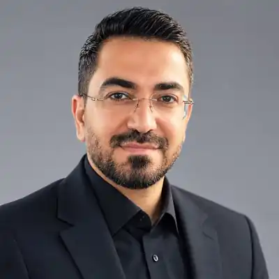

University Entrance Exam
Evidence-informed counselling and planning for candidates and families, including decision support around field-of-study selection and educational priorities.
Educator · Researcher · Author · Consultant
Education with human judgement at its centre.
Dr. Javad Rezazadeh Yazdeli works across higher education, applied linguistics, assessment, educational materials, talent development and academic guidance, connecting research with the decisions learners, families, teachers and institutions actually face.

An academic approach
Across language education, assessment, professional learning and student guidance, the central question is not simply what a score or observation shows, but what conclusion it can responsibly support. A classroom performance, a research finding and an educational consultation offer different forms of evidence, each with its own limits. Bringing them into dialogue requires context, critical interpretation and a willingness to revise an initial judgement.
Visitors seeking scholarly evidence can begin with the verified publication record and research programme. Those considering an educational decision can explore the student guidance pathway and the developmental principles of Golden Talent. Research outputs and frameworks still under development are deliberately distinguished.
Choose your pathway
The site now separates discovery by audience rather than asking every visitor to navigate the same catalogue. The underlying ecosystem is shared, but the questions, evidence and next actions differ.
About
Dr. Javad Rezazadeh Yazdeli is a university lecturer, education researcher and educational consultant with more than fifteen years of experience across higher education and English-language education. Applied Linguistics is one of the central research and professional fields in his work, alongside curriculum and materials evaluation, assessment, learner needs, mixed-methods research, technology-enhanced learning and AI in education.
His professional work also includes educational guidance, talent identification and pathway design. The aim is not to reduce educational choice to a score or a fashionable label, but to bring evidence, context and professional judgement together.
Educational philosophy
A concise statement of Dr. Javad Rezazadeh Yazdeli’s educational philosophy, drawn from «کشف مسیر طلایی استعداد»: human growth, ethical judgement, differentiated talent, effort, family, teacher and counselling as parts of one educational whole.
Research programme
The public research programme connects language education, curriculum and materials, assessment, technology and talent development. Each area is treated as a question of evidence, context and responsible educational judgement rather than as a collection of disconnected topics.
English-language learning, vocabulary, materials, learner needs and evidence from real educational settings.
Curriculum & materialsHow materials, curriculum and pedagogy interact with learner needs, culture and classroom context.
AssessmentHow assessment evidence can support responsible decisions without claiming more certainty than the evidence warrants.
DevelopmentA developmental, multi-source approach to understanding strengths, uncertainty and pathways without reducing a person to one score.
Academic ecosystem
The English edition is organised for international academic and professional audiences rather than as a mirror of the Persian service site.
A concise factual dossier of education, research fields, teaching and scholarly identifiers.
01Applied Linguistics, educational inquiry, assessment, materials and development-oriented research.
02English-language education, materials, vocabulary, assessment and responsible technology use.
03Professional learning, assessment literacy, materials literacy and educational judgement.
04Verified scholarly records and links to established research identities.
05Only projects already authorised for public release are represented here.
06Conferences, scholarly service, invited activity and professional development.
07Research, publishing, scholarly events and professional learning with a clearly defined purpose.
Educational consulting
Consultation is organised around the learner and the decision rather than a generic package. Current areas include university entrance examination guidance, field-of-study selection, academic planning, talent identification and longer-term educational pathway design.
Evidence-informed counselling and planning for candidates and families, including decision support around field-of-study selection and educational priorities.
Multi-source interpretation of interests, strengths, context and developmental possibilities rather than one-test labelling.
Educational pathway design for university, postgraduate study and longer-term academic development.
مشاوره و برنامهریزی کنکور، انتخاب رشته، استعدادیابی، هدایت تحصیلی و طراحی مسیر آموزشی با رویکردی علمی، فردمحور و مبتنی بر شواهد.
درخواست مشاورهScholarship
The publication archive is being consolidated around verified records. These profile links provide direct routes to current scholarly identities and research outputs.
News & insights
This section will carry verified academic news, talks, publications, project milestones, educational guidance and evidence-based articles. It is also the foundation for the site's long-term search strategy: useful pages answering real questions around talent identification, university entrance examination counselling, field selection, academic guidance, language education and human-centred assessment.
The site is being developed as a permanent scholarly and professional home, integrating research, educational practice, consultation and public-facing knowledge.
Connect
Official X and Facebook profile links are listed for identity discovery; official enquiries and service support remain email-only.